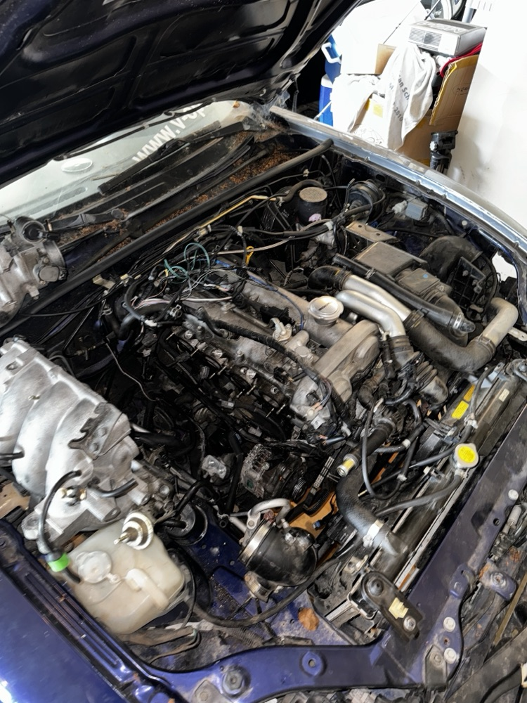
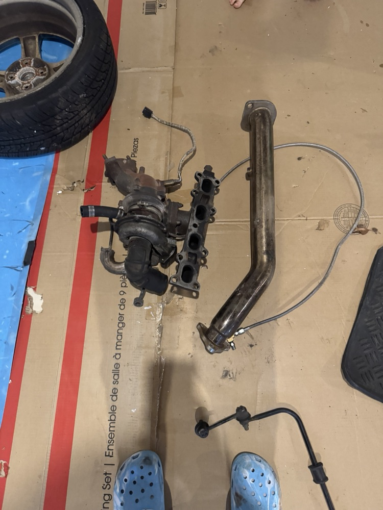
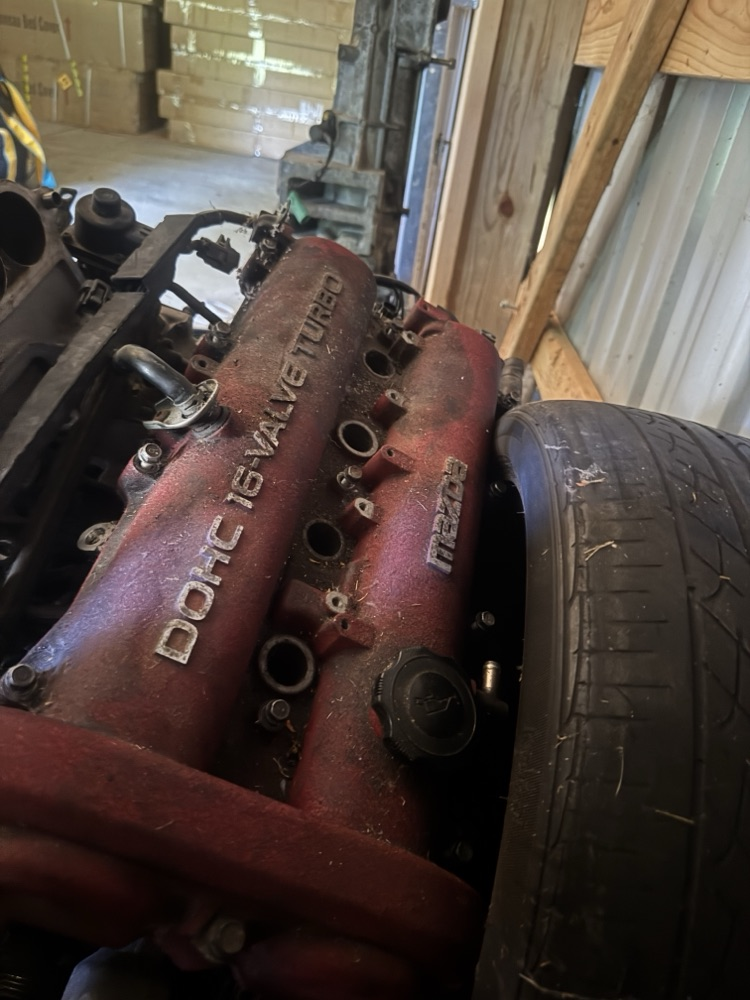
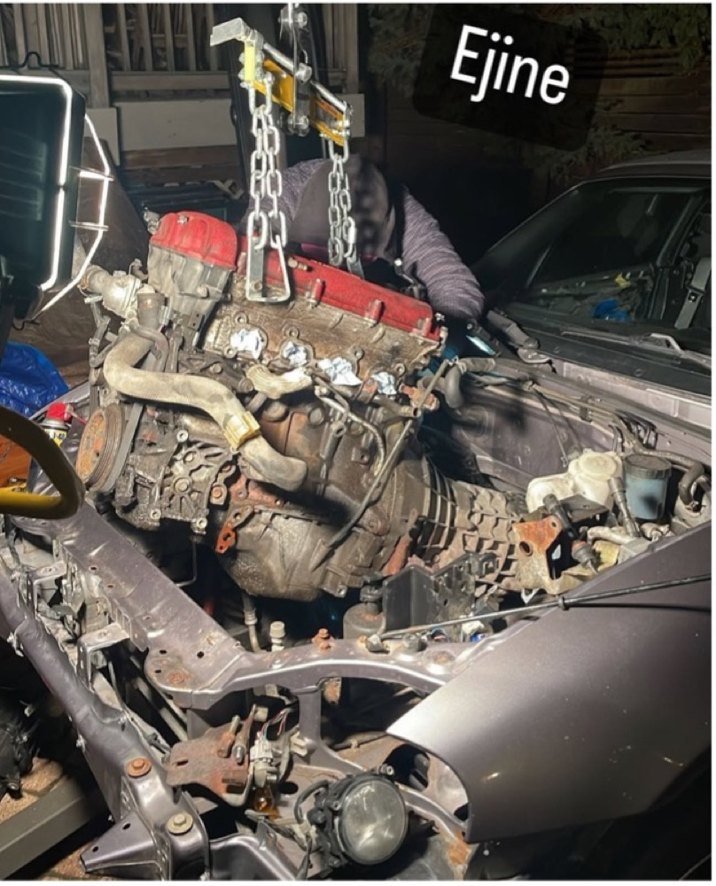
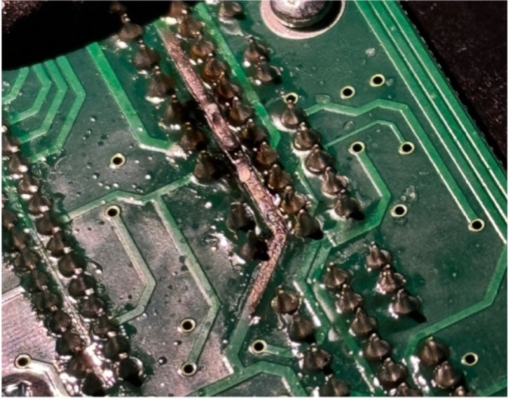
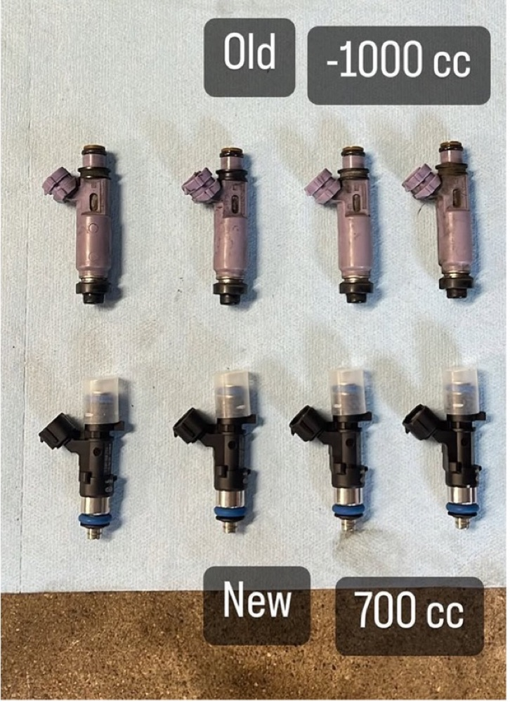
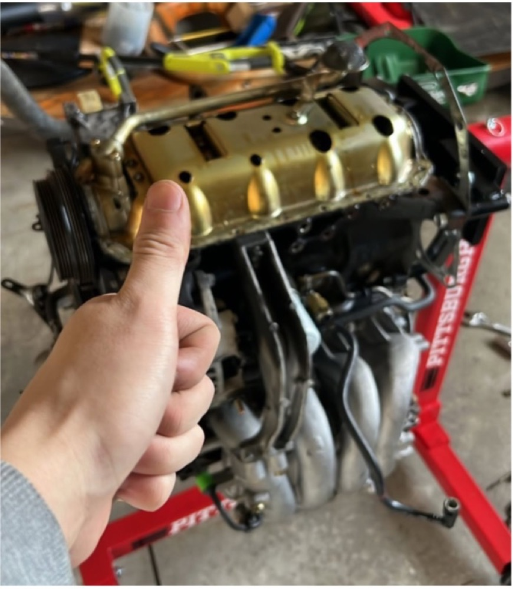
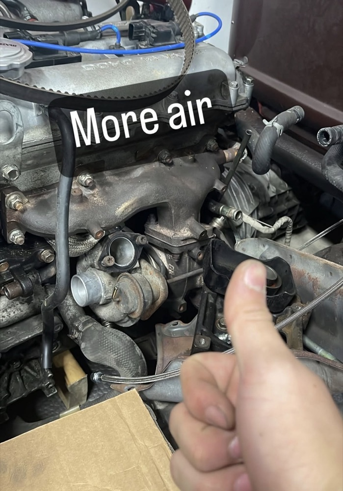
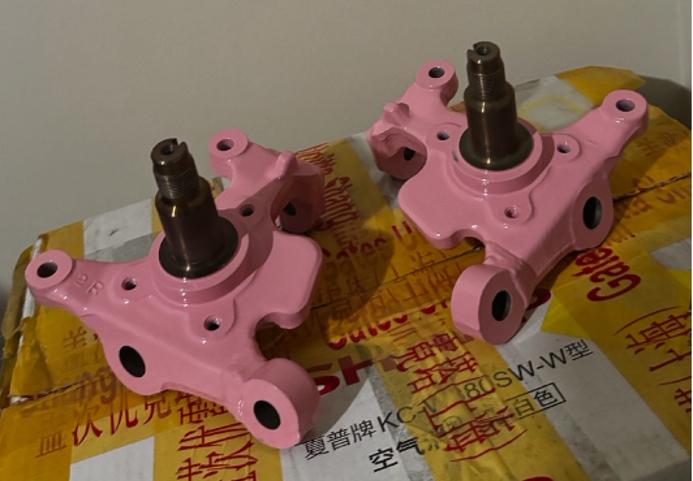

Competition Drift Car, turbo (provisions), EFI, suspension engineering, and data logging
Turbo Miata: OEM+ VVT Turbo
The rusty Miata was a 2003 Mazdaspeed Miata. Parts that were used:
- Turbo hot side
- Oil pan
- Intake and charge piping
Sourced Parts (Necessary):
- Larger Fuel Pump (DeatschWerks 300; 340lph)
- Larger Fuel Injectors (700cc; justified below)
- Oil and Coolant feed and return lines + fittings (Off oil pressure sensor and water pump)
- Boost control solenoid
- Wideband 02 Sensor (Gauge if not connected to ECU)
- ECU and Harness
Sourced (Unecessary):
- Downpipe to NB2 exhaust adapter (only for aftermarket non Mazdaspeed Exhausts)
- Larger Intercooler (Flyin’ Miata)
The Mazdaspeed engine is based on the NB1 which had a 9.5:1 compression ratio and lacked VVT. The oil pan (with provisions for oil return) bolted to the NB2’s 10:1 VVT block. Oil feed was T’d off the oil pressure sensor with AN – NTP fittings and a threaded line. Coolant from the water pump in the front of the engine.
Tuning was done on a Haltech. The software is ridiculously intuitive and has both closed and open loop AFR tuning. The process of tuning is not very hard. It took the most time just to wire everything right and make sure all the pins were reading. Then idle tuning and PID, determining if bad idle was mechanical, electrical, or software. Part of this diagnosis involved finding out one ECU had to be sent back for a bad spark signal. Eventually, both cars made it on a 1500 mile road trip the day after completion.
Misc Parts: The fuel system is overkill. The main reasoning is for overhead, temperature, and higher flow injectors let you push more fuel with a shorter duty cycle which ensures fuel is more efficiently timed and sparked.
The turbo Miata died when the plug and play harness burned itself after 15,000 miles. The engine was returned to OEM and the turbo will wait for another summer.








2-way Locking Differential:
The biggest modification related to driving dynamics is by far the Tomei 2-way LSD. A 2- way differential resists wheel speed difference across the diff on acceleration and deceleration using clutches. The tuning is extremely tedious as it required fabricating a special tool to torque the pre-load ‘nuts’.
Engine response and rotation on braking were greatly improved which is important on a <150 hp car. The vehicle resisted “snapping” back to straight as 4 corner double wishbone cars like to do. Overall, my ability to move the rear of the car around and trust that it would remain predictable greatly improved confidence in chasing.
Front Suspension Geometry:
Team tandems drifting is judged on many factors: Vehicle proximity, speed, angle, visual, transition timing, etc. Performance can reasonably be traded of for driver control and visual points which is unique to the sport and creates a series of constraints that must be worked around.
- Lower than OEM ride height:
- In double wishbone, lowering with only coil overs can lead to extension of the roll moment arm from roll center dropping further than COG. This was compensated for with reshaped lower control arm mounts and an adjustable upper control arm.
- The steering rack becomes misaligned with its mounts on the knuckle. Custom 2 cm spacers were made to lift the steering rack.
These decisions were made using in car measurements, Assetto Corsa simulator data, suspension geometry simulation tools, and OEM Mazda documents.

Data Logger:
Rasberry pi5, MPU6050, GPS, Camera, Mic…